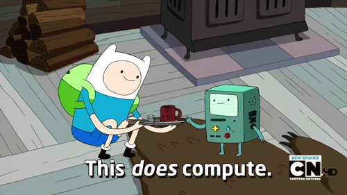

who am I?
senior front-end engineer for AOL
work closely with the >Engadget team

choosing software engineering
Bachelor's in Computer ScienceEnglish??!!!!
Master's in Software Technology
Settled on web development

educational requirements
- Different paths: some people have degrees, and some do not
- Easiest road is to get a BS in CS
- skills you need
- a capacity for critical, logical thought
- detail-oriented, because spelling and punctuation really matters
- a capacity for being really, really frustrated and ability to hunt down bugs
- good writing skills for documenting your code
- skills you don't
- advanced calculus/algebra skills!!!
finding a job
- having an online portfolio (like github) is super helpful
- social networking: Twitter, meetups, word-of-mouth
typical day
mornings: usually emails, meetings, planning
afternoons: programming hours
evenings: more programming

hours
10am-6:30pm
pros: pretty flexible w/r/t working from home, taking time off
cons: working nights? weekends? holidays? sometimes! ಠ_ಠ
not to mention meetups, classes, conferences
advancement
- management
- architecture
- entrepreneurship
- research
skills
contrary to popular belief, people skills are super important
software is written collaboratively and teamwork is essential
contribution, tutoring, and mentoring are also very important
uniform
lol
more casual than traditional workplaces
employment outlook and competition
competitive, but plenty of jobs to fill too
ways to enter: internships, freelance, building a portfolio
not-so-awesome things
(i.e., challenges)
- staying current
- work/life balance
- managing deadlines
- doing my own projects
- focusing interests in a broad field
awesome things
- creating new things
- puzzle solving
- always learning
- exciting to be in a growing, evolving industry
- flexible work schedule
- good perks
- can work remotely and live almost anywhere
- YOU CAN START RIGHT NOW OMG

would I do it again?